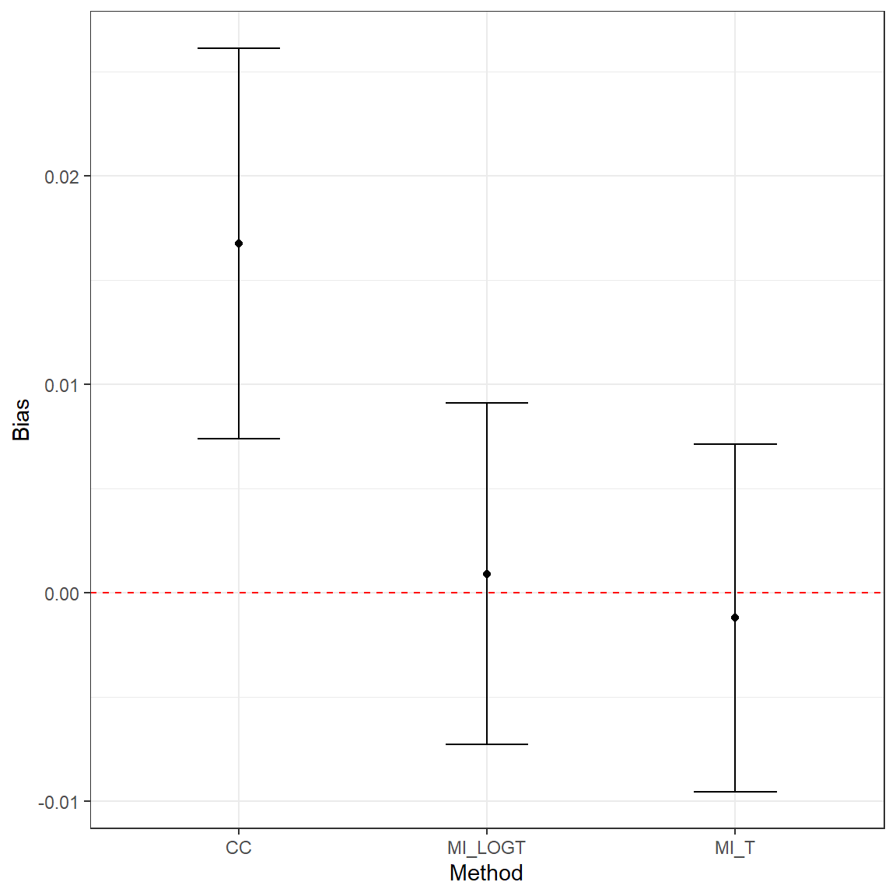

rsimsum and the tidyverse
Alessandro Gasparini
2026-04-15
Source:vignettes/F-rsimsumtidyverse.Rmd
F-rsimsumtidyverse.Rmdrsimsum plays nice with the tidyverse.
library(rsimsum)
library(dplyr)
#>
#> Attaching package: 'dplyr'
#> The following objects are masked from 'package:stats':
#>
#> filter, lag
#> The following objects are masked from 'package:base':
#>
#> intersect, setdiff, setequal, union
library(ggplot2)
library(knitr)
#>
#> Attaching package: 'knitr'
#> The following object is masked from 'package:rsimsum':
#>
#> kableFor instance, it is possible to chain functions using the piping
operator %>% to obtain tables and plots with a single
call:
data("MIsim", package = "rsimsum")
MIsim %>%
simsum(estvarname = "b", se = "se", methodvar = "method", true = 0.5) %>%
summary() %>%
tidy() %>%
kable()
#> 'ref' method was not specified, CC set as the reference| stat | est | mcse | method | lower | upper |
|---|---|---|---|---|---|
| nsim | 1000.0000000 | NA | CC | NA | NA |
| thetamean | 0.5167662 | NA | CC | NA | NA |
| thetamedian | 0.5069935 | NA | CC | NA | NA |
| se2mean | 0.0216373 | NA | CC | NA | NA |
| se2median | 0.0211425 | NA | CC | NA | NA |
| bias | 0.0167662 | 0.0047787 | CC | 0.0074001 | 0.0261322 |
| rbias | 0.0335323 | 0.0095574 | CC | 0.0148003 | 0.0522644 |
| empse | 0.1511150 | 0.0033807 | CC | 0.1444889 | 0.1577411 |
| mse | 0.0230940 | 0.0011338 | CC | 0.0208717 | 0.0253163 |
| relprec | 0.0000000 | 0.0000001 | CC | -0.0000002 | 0.0000002 |
| modelse | 0.1470963 | 0.0005274 | CC | 0.1460626 | 0.1481300 |
| relerror | -2.6593842 | 2.2054817 | CC | -6.9820490 | 1.6632806 |
| cover | 0.9430000 | 0.0073315 | CC | 0.9286305 | 0.9573695 |
| becover | 0.9400000 | 0.0075100 | CC | 0.9252807 | 0.9547193 |
| power | 0.9460000 | 0.0071473 | CC | 0.9319915 | 0.9600085 |
| nsim | 1000.0000000 | NA | MI_LOGT | NA | NA |
| thetamean | 0.5009231 | NA | MI_LOGT | NA | NA |
| thetamedian | 0.4969223 | NA | MI_LOGT | NA | NA |
| se2mean | 0.0182091 | NA | MI_LOGT | NA | NA |
| se2median | 0.0172157 | NA | MI_LOGT | NA | NA |
| bias | 0.0009231 | 0.0041744 | MI_LOGT | -0.0072586 | 0.0091048 |
| rbias | 0.0018462 | 0.0083488 | MI_LOGT | -0.0145172 | 0.0182096 |
| empse | 0.1320064 | 0.0029532 | MI_LOGT | 0.1262182 | 0.1377947 |
| mse | 0.0174091 | 0.0008813 | MI_LOGT | 0.0156818 | 0.0191364 |
| relprec | 31.0463410 | 3.9374726 | MI_LOGT | 23.3290364 | 38.7636456 |
| modelse | 0.1349413 | 0.0006046 | MI_LOGT | 0.1337563 | 0.1361263 |
| relerror | 2.2232593 | 2.3323382 | MI_LOGT | -2.3480396 | 6.7945582 |
| cover | 0.9490000 | 0.0069569 | MI_LOGT | 0.9353647 | 0.9626353 |
| becover | 0.9490000 | 0.0069569 | MI_LOGT | 0.9353647 | 0.9626353 |
| power | 0.9690000 | 0.0054808 | MI_LOGT | 0.9582579 | 0.9797421 |
| nsim | 1000.0000000 | NA | MI_T | NA | NA |
| thetamean | 0.4988092 | NA | MI_T | NA | NA |
| thetamedian | 0.4939111 | NA | MI_T | NA | NA |
| se2mean | 0.0179117 | NA | MI_T | NA | NA |
| se2median | 0.0169319 | NA | MI_T | NA | NA |
| bias | -0.0011908 | 0.0042510 | MI_T | -0.0095226 | 0.0071409 |
| rbias | -0.0023817 | 0.0085020 | MI_T | -0.0190452 | 0.0142819 |
| empse | 0.1344277 | 0.0030074 | MI_T | 0.1285333 | 0.1403221 |
| mse | 0.0180542 | 0.0009112 | MI_T | 0.0162682 | 0.0198401 |
| relprec | 26.3681613 | 3.8423791 | MI_T | 18.8372366 | 33.8990859 |
| modelse | 0.1338346 | 0.0005856 | MI_T | 0.1326867 | 0.1349824 |
| relerror | -0.4412233 | 2.2695216 | MI_T | -4.8894038 | 4.0069573 |
| cover | 0.9430000 | 0.0073315 | MI_T | 0.9286305 | 0.9573695 |
| becover | 0.9430000 | 0.0073315 | MI_T | 0.9286305 | 0.9573695 |
| power | 0.9630000 | 0.0059692 | MI_T | 0.9513006 | 0.9746994 |
MIsim %>%
simsum(estvarname = "b", se = "se", methodvar = "method", true = 0.5) %>%
summary() %>%
tidy(stats = "bias") %>%
ggplot(aes(x = method, y = est, ymin = lower, ymax = upper)) +
geom_hline(yintercept = 0, color = "red", lty = "dashed") +
geom_point() +
geom_errorbar(width = 1 / 3) +
theme_bw() +
labs(x = "Method", y = "Bias")
#> 'ref' method was not specified, CC set as the reference